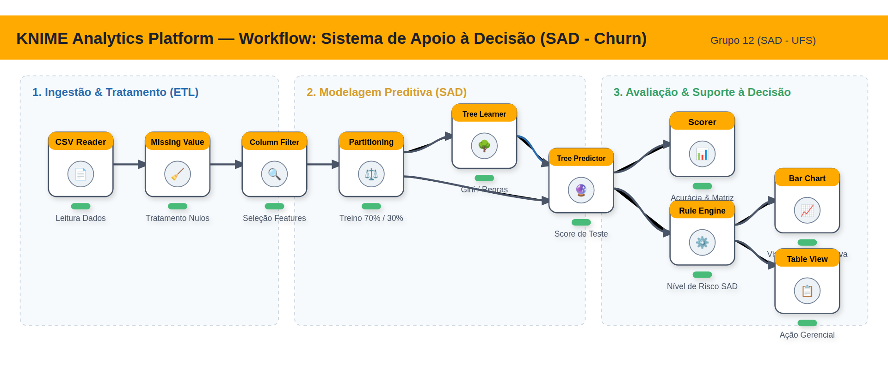

Arquitetura Prática do Workflow
Pipeline no KNIME: Do Dado à Prescrição
01.
Ingestão (CSV Reader)
02.
Partição 70/30
03.
Árvore de Decisão
04.
Ação Prescritiva
KNIME Analytics Platform — Workflow Executável (churn_prediction_sad.knwf)
